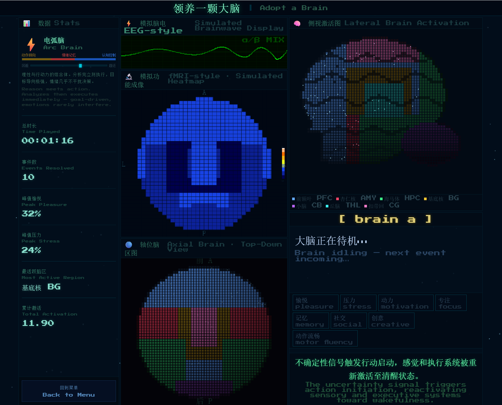

Adopt a Brain
Personal project, 2026, public beta
A browser game where you adopt a pixel-art brain and make everyday decisions for it. Your choices change its simulated brain activity and gradually shape one of nine playful brain types.
Role: I vibe-coded the project with AI assistance throughout, from game design and bilingual writing to web development.